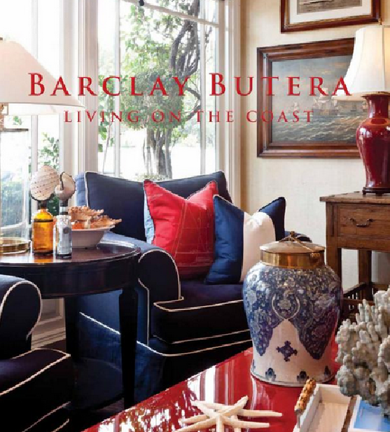

.png)
.PNG)
.PNG)
.PNG)
.PNG)
.PNG)
.JPG)
.JPG)
.PNG)
.PNG)



Barclay Butera Living on the Coast
Have you seen this book? My mother gave it to me last week since she knows #1 how much I love house books, and #2 how much I love beach houses. So it is no surprise that I thought the book was absolutely gorgeous!
You may already know that Barclay Butera is a world famous interior designer whose style is very different from most of what you see today. He began his career at an early age (and he is still quite young.) According to all the press about him, he has a basic philosophy of helping his clients achieve a “better-best” style of living. I have 3 words for his style…
luxurious,

livable,

and layered.
Not all of his homes are beach-house oriented. If you go to his website you can look at his work grouped by location…from coastal to desert and everything in between. I just happen to like the coastal houses the best. 🙂
He frequently uses big doses of blue in them – quite appropriate for the location, don’t you think?

Barclay Butera Interiors press
The book is divided into sections by beach style and within that by homes that fit in each category. It begins with cottage beach style (my favorite) and photographs of this charming home – the Jasmine Street Cottage.
And then this porch! Oh my goodness….board and batten walls, dark wicker, touches of red….this must have been done just for me. 🙂
This is just a glimpse of some of his extensive work. If you like his style, I know you will love the book! It is the perfect book for me to read for a taste of summer homes (and since we are not going to vacation in a summer beach home this year, this is as close as I will get to one!)
Do you like these rooms, or are you more a fan of the lighter rooms with gray and industrial elements trend of today (or neither)?
We’d love to hear your thoughts in the comments!


.PNG)
I’ve followed him for a while and just love his stuff. I’m a red, white and blue kind of decorator and I love wicker and rattan with the coastal influence. I love how he uses upscale rattan furniture and sailing paintings and mixes them with fresh fabrics. And he’s not afraid to use floral chintz but he does it different than all that chintz that was overused in the 80s and 90s. His style is reminiscent of some of Ralph Lauren’s work.
Hi Kelly!!!!!!!!!!!!! Love it all. Want the book. Off the steal a few minutes to catch up on your gorgeous blog!! I’ve missed you!!! xo, tessa
———————————————————————–
Tessa ~ Welcome back girl! I’ve missed you around here! You would LOVE Butera’s book. If you don’t get it, at least check out his website. Lots of eyecandy there. Thanks for finding the time to stop in and leave your kind words.
Kelly
I just found your site and I’m ever so glad! I’m your newest follower 🙂
———————————————————————–
Amanda ~ Welcome! I’m glad you found me. Thank you so much for being my newest follower! 🙂 I love getting to know new folks! Took a peek over at your blog and I see you are Tech fan. Hallelujah! Go Jackets! (Sorry Katie!)
Kelly
I loved the blue grasscloth…the blue paisley wallpaper (you have me looking at wallpaper…what’s up with that?) and the room with the red striped chair. I always love nautical, coastal…rattany design and all the collections represented with them..Sweet!
————————————————————————
Phyliss ~ I think we all need some of that navy blue grasscloth somewhere in our homes! ha ha. The room with the red striped chair looks like such a cheerful space to me.
Kelly
I love his style….and what about all that grasscloth, especially on the ceiling? I die. I want to put grasscloth in our bedroom. One day……and those beds look totally inviting! Thanks always for your sweet comments.
————————————————————————-
That grasscloth is beautiful isn’t it Elizabeth? They would have to be using some pretty heavy duty paste to paste it to the ceiling since it is heavy. But it sure adds a wonderful texture to the room that you can’t get with just regular wallpaper.
Thanks for stopping by here today.
Kelly
Wow, Kelly! I’ve never heard of Barclay Butera, so thank you for introducing me to his work. I especially love the 2nd photo, and the one with the striped linens and the ottomans at the foot of the bed is the perfect inspiration for my master bedroom bed linens {pinned it!} Thanks again. 🙂
————————————————————————
Well I am happy to introduce you to him Aimee. He won’t quite fit with the rooms over at your dream stone house on your blog, 🙂 but they are pretty rooms, aren’t they? Glad you found something to pin. You are my pinning queen!
Kelly
Absolutely adore this style.
I love the lighter look of gray / industrial influence, but, just like any other trend, am becoming bored with it. As a designer, my pet peeve is seeing people jump on the bandwagon of trends instead of staying true to their own personal preferences.
Good design (in my opinion) is about spaces reflecting their owners, not a trend… I enjoy incorporating hints of the latest styles, but to me, rooms reflecting your own personality are the best. This style is very close to my own, and I love every image you shared!
———————————————————————
Aren’t his rooms great, Kelly? I think people jump on trends because they are new and fresh to our eyes…but like you said, you will get bored with it. Then something else new will come along. That’s what makes it hard to stay true to your own preferences. I agree with you that good design should reflect the owners, and I also think it should reflect location. I made the mistake of doing this house nautical at first because I truly DO love beach houses (and would love to live there.) But it was all wrong for a home in the middle of Georgia. I had to redo it to reflect our life here. I think that is what I like about Butera’s houses..they are beautiful and they reflect the location as well.
Thank you so much for jumping in the conversation!
Kelly